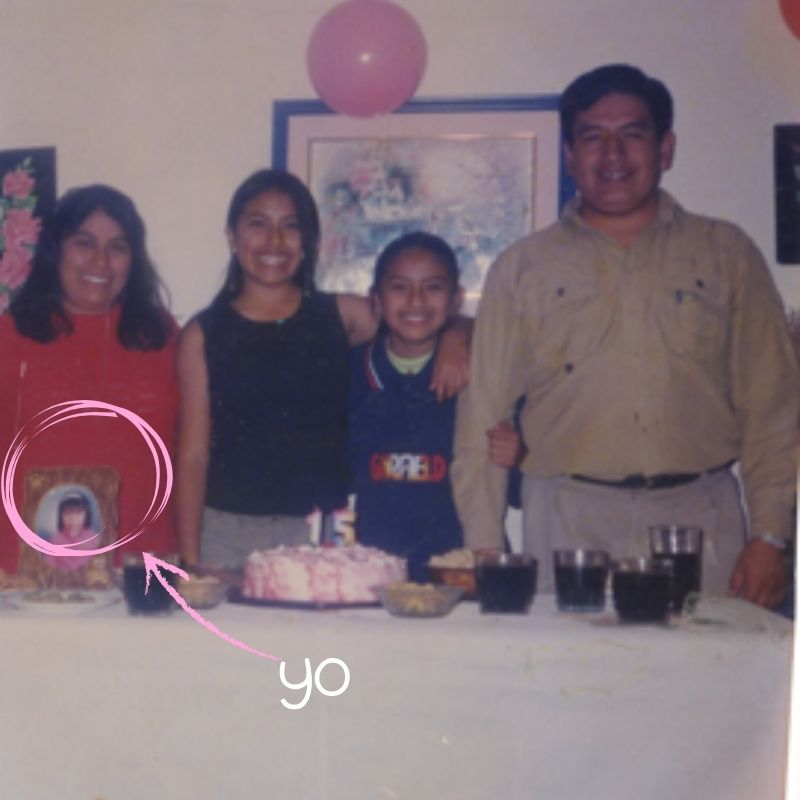
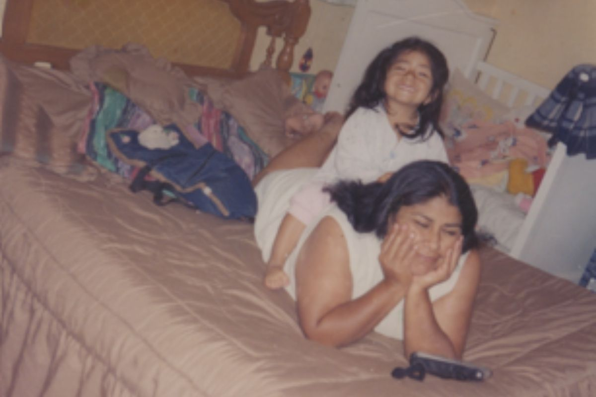
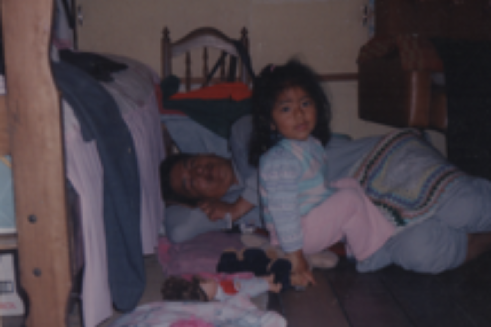
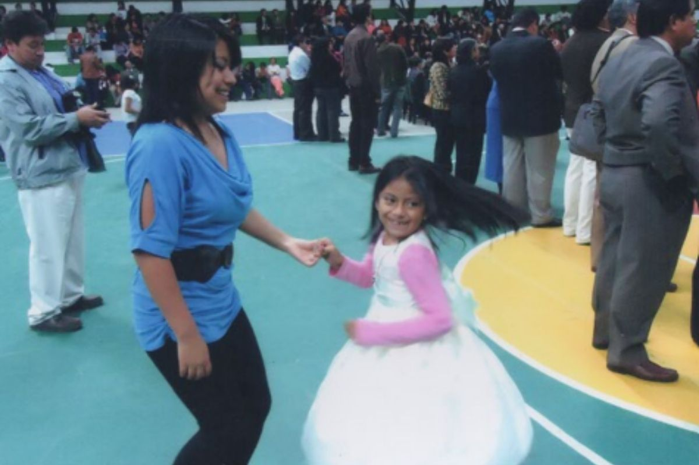
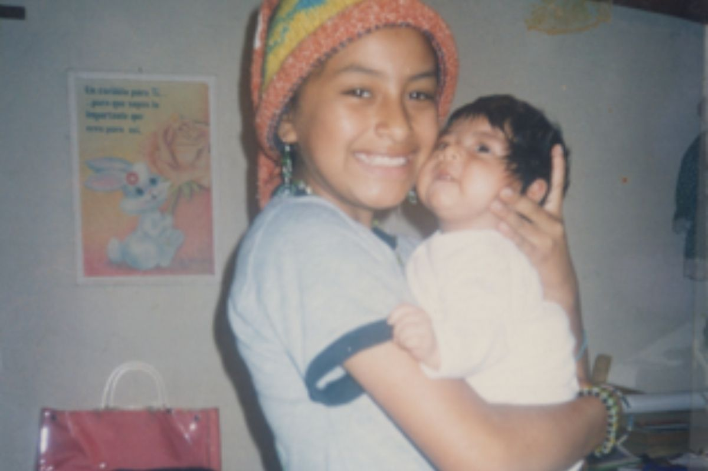
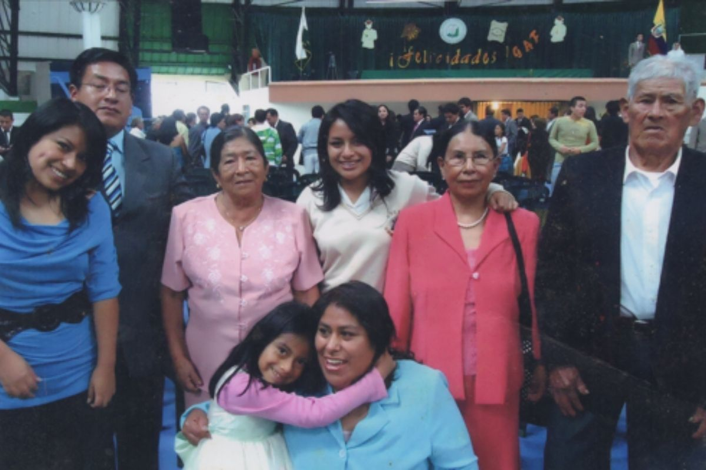

Estas son las personas que más me importan en la vida y por lo que soy lo que soy:

Es la mujer más luchadora y perseverante que conozco. A veces tenemos nuestros desacuerdos en diferentes cuestiones pero es alguien a la que le debo el ser como soy, como trato a los demás, la bondad que tengo en mi corazón y las ganas de darle todo lo que algún día construiré

Mi papá es una de las personas con la que más me peleo y más desacuerdos tengo en mi vida, él dice que antes le quería más y tal vez tenga un poco de razón, pero eso no dice nada acerca de la admiración y cariño que le tengo, por el simple hecho de salir de ese hoyo tan feo que es la depresión y mantenerse fuerte en situaciones donde solo quieres llorar, ah y por ayudarme a hacer mis trabajos manuales a última hora.

Es mi hermana mayor, la gente siempre piensa que ella es mi mamá en realidad y es chistoso burlarme de eso, pero además de ser mi hermana mayor también es mi madrina, mi fuente de consejos y las persona más trabajadora que conozco, siempre luchó y lucha cada día por conseguir lo que quiere. En ocasiones también cuenta chistes malísimos y cuenta con lo que llamamos en la casa "humor Sarango" pero todas tenemos algo de eso.

Es mi hermana mayor también, aunque ella esté en el medio, yo le considero mi segunda mamá, es la persona por la que sigo viva, por la que soy lo que soy, la persona que me llevó a mi primer concierto y siempre está para cuando la necesito. Es mi persona favorita en el mundo y sin ella yo no estaría aquí. En ocasiones nos peleamos (generalmente por nuestros gatos) pero no hay nada que nos separe, ah, y también es mi complice de planes inesperados.

Cuento con la dicha de que mis cuatro abuelitos sigan conmigo al día de hoy. La historia de como mis papás se conocieron es bastante graciosa. Si no te diste cuenta por mi apellido, mi papá es de Loja, por lo que mis abuelitos paternos, Clotilde y Luis, viven en un pequeño pueblito recóndito de Loja, llamado Cariamanga y en época de cosecha en Chingulle, mientras que mis abuelitos maternos son del norte del país, específicamente de un pueblito llamado Zuleta ubicado en Ibarra, por el momento no estamos pasando por un momento bueno en nuestra familia, pero tratamos de mantenernos unidos en todo tipo de situaciones.
